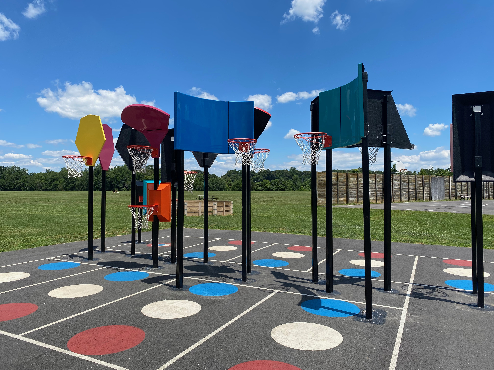

Day 39: I'm Wide Awake, It's New York
previous blog | next blog
July 13, 2021
I have decided not to edit this blog while I write it, outside of the normal spelling, grammatical, or syntactical nonsensicalities. Producing a new blog has taken some time––ten days, to be exact––though it's not because I've failed to do blog-worthy things. The problem is that I just haven't had the urge to write like I used to.
But, amid my neglect, I remembered that the audience of this blog are my friends and family! You probably don’t care how good these entries are; you likely just want to read what I’m thinking. I’ll leave the good, cohesive writing for the big dogs, and I'll instead just pour some unadulterated thoughts on this page. I hope this vulnerability is well embraced.
{kind=link}
So, trust and consider this my natural self, in free form and streams of consciousness.
To reiterate, writing has not been quite as easy lately. Early on, it was a means of processing: for instance, when I decided that I wanted to "tune it out," or when I reflected on the various manifestations of positive emotions. Now, it’s different: I’ve spent the last week and a half with my friend Jonathan in New Jersey, Josie in Boston, and many, many friends in New York. I biked 40+ miles into the Big Apple from eastern New Jersey, bypassing public nudity and the remnants of a flood, and even riding on a highway by accident. I talked to my family––nuclear and abroad––a lot, and happened upon a copy of Murder on the Orient Express that I finished in 36 hours (I shamefully had not read it!). I have been eating many good foods, meeting many cool people, and falling off my bike. Among the excitement, setting aside time to write has not felt productive.
Let me put this neglect for writing another way: Jonathan gave me a stack of books––five of them in total, I believe––that he wants me to read. (When he found out I haven't read The Goldfinch, he was especially bothered!) On top of that, my friend Robbie sent me a copy of his own manuscript, which I haven't yet gotten to. These days, I'm drawn to a quote in The Picture of Dorian Gray: “I am too fond of reading books to care to write them.”
Whenever I start writing, I recall that there are so many things to read and learn, and that I don’t learn so much when I write. That's not to say writing can't be privately useful––it can bring public gain, usually financial or pride-based, or it can help the writer process things––but that I'm not looking for its use cases right now. (And if it needs to be said, regarding the former use case, I am certainly not a talented enough writer for it to be lucrative.)
It seems that people mostly want to process––or pray, or reflect, or consider alternate outcomes––when they’re not doing well. I’m doing well, so I don’t want to wait and process things. I want to live! I’ll process in due time.
Most of my concerns of late have revolved around the question “What should I work toward?” The other day, I read one of Paul Graham’s essays, "How to Work Hard." It echoes bits of Richard Flamming’s “You and Your Research.” which I’ve cited once before; each talks about what separates the “greats” from the “elites,” specifically professionally. My friend Megan and I discussed these separators over Mimi’s famous dumplings.
There are two paths of “hard work” that arrive at professional success: one where we specialize––take, for instance, an established mathematician, who has done just her mathematics for her entire career––and produce often highly technical novelties near the top of our field; and another where we don’t specialize, but vary ourselves and socialize, ultimately having a breadth that enables us to draw connections among subjects. With that in mind, what should I pursue? Should I answer to opportunities requiring depth, or those requiring breadth? Where do I belong? (You may consider that I'm awfully too young to wonder this now, though I'm of the mindset that things are awfully consequential just out of college. I hope that one day I can look back and regret this fretting.)
Aside from these musings, I’m blissfully in New York. The journey ends here; I now bike around the city and eat cheesecake and get lost in the urbia.
For a while, especially early on, I felt like I was spending my days, in a way, half asleep. Like I wasn’t mindful of the absurdities of my environment, or of this trip at large. Take, for instance, that I biked around in Fredericksburg and stumbled upon this basketball set.
This court––a Bankshot court, to be exact––is elite. It's designed so that anyone, of any ability, shape, or size, can play the game of basketball. Also, the hoops are low and the backboards are funky. It's any basketball player's dream, and is especially socially impactful. No way I processed how cool this was when I first stumbled upon it.
There's something about New York that has me wide awake. Maybe it's the energy, people, or the alertness I need to have when I lock my bike up. Skyscraper lights pour onto the streets with a certain reminder that everyone is still awake; WeWork offices––unashamedly my favorite place to work––line corners like hydrants; coffee shops literally don’t close. I feel alive, well, and on edge. I have a sudden urge to program more and also to buy new shoes, though my Chacos won’t budge. And it’s the perfect place to end this trip.
(The title of this entry alludes to my favorite album, I’m Wide Awake, It’s Morning.)